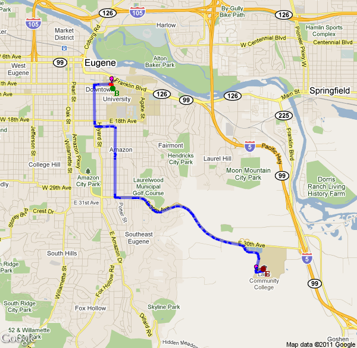

Directions for: kincade_to_lcc.gpx
| | Start at 1101 Kincaid St, Eugene, OR 97401, USA |
| Turn # | Distance | Turn | Street Name |
| 1 | 0.1 | left | E 11th Ave |
| 2 | 0.3 | left | Patterson St |
| 3 | 0.9 | left | E 19th Ave |
| 4 | 1.2 | right | Harris St |
| 5 | 2.3 | left | E 30th Ave |
| 6 | 2.8 | left | Kimberly Dr |
| 7 | 3 | left | E 30th Ave |
| 8 | 4.4 | right | Gonyea Rd |
|
End at Gonyea Rd, Eugene, OR 97405, USA
Total distance: 5.1 Miles | |
 |